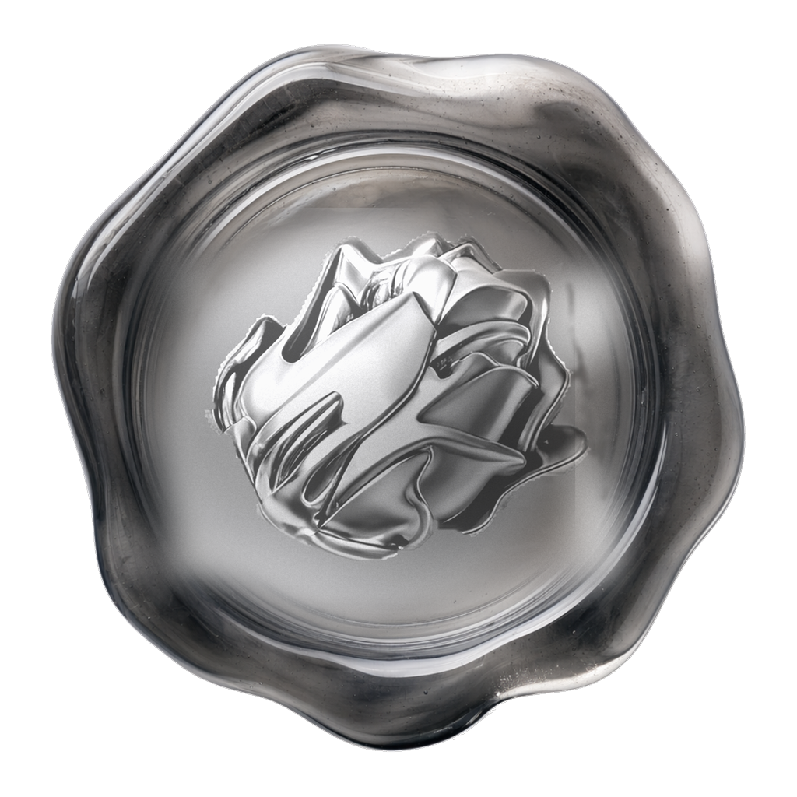
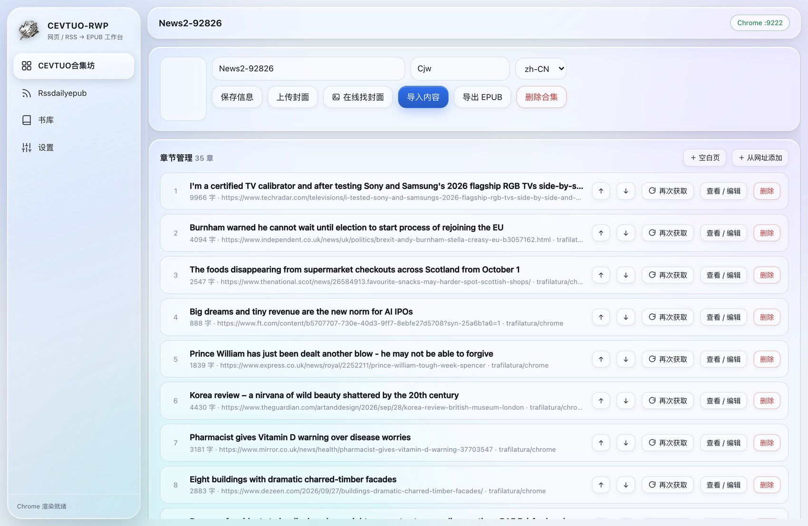
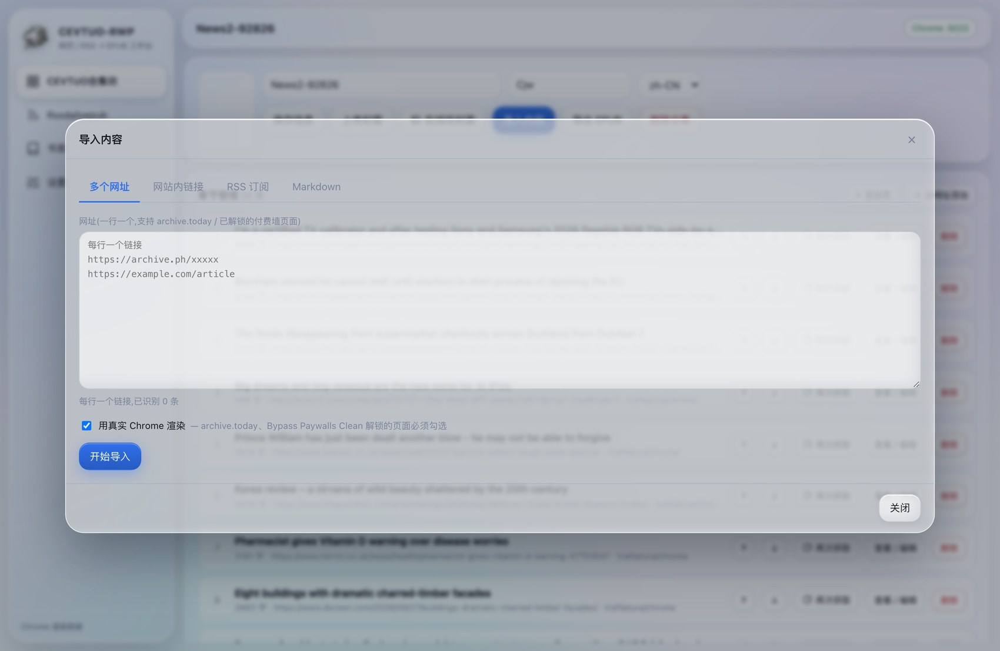
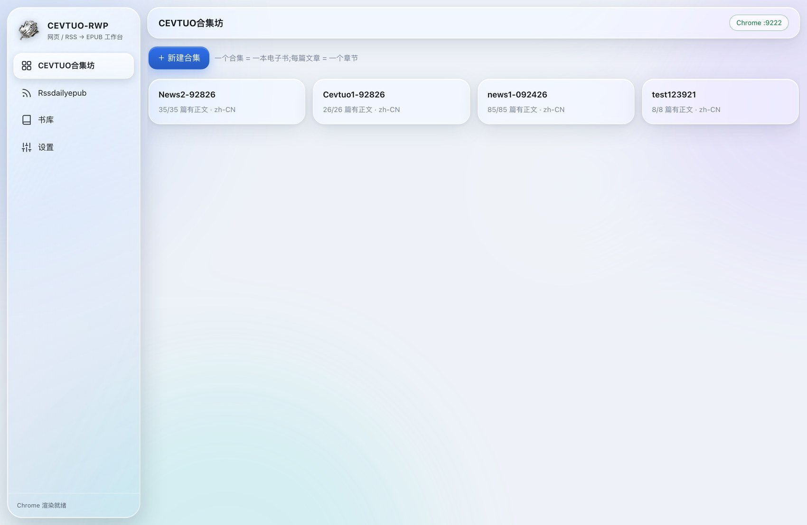
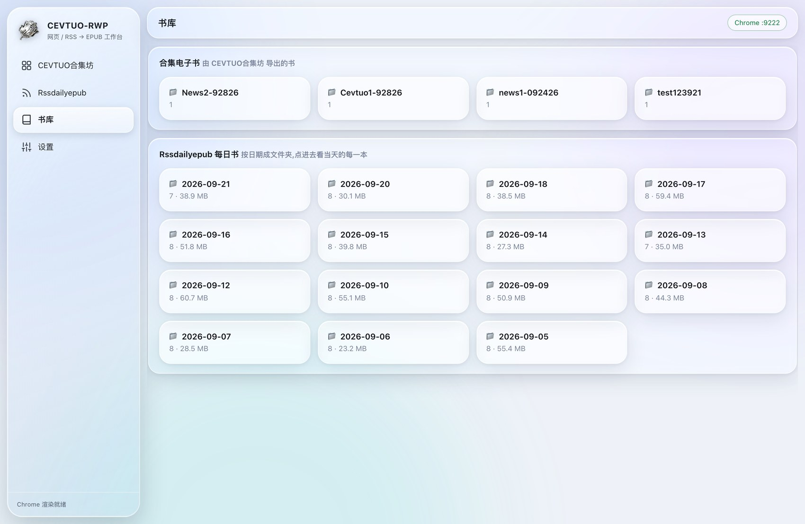
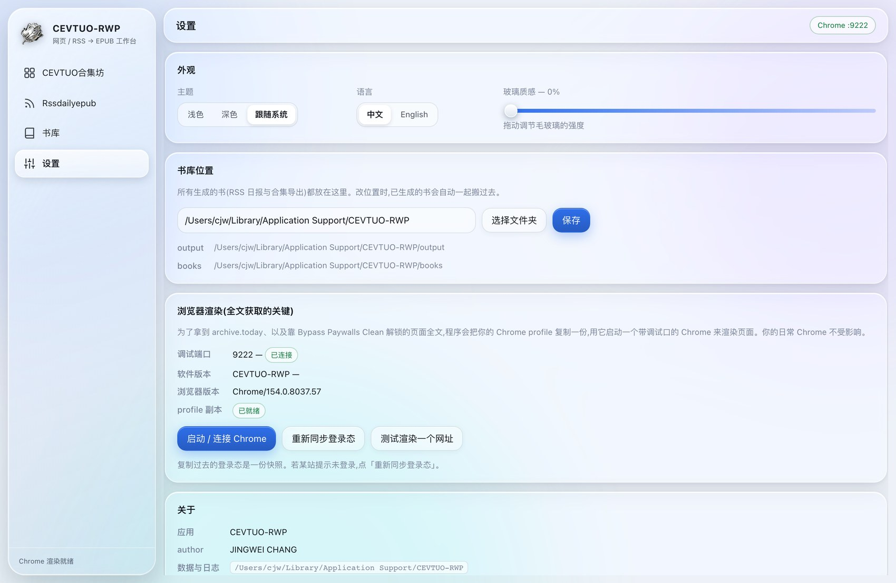

Turn web pages, in-site links, RSS feeds and Markdown into EPUB ebooks.
A native desktop app with its runtime bundled in — download and run.
macOS first launch: right-click → Open (ad-hoc signed, not notarized by Apple) ·
macOS 首次打开请右键 → 打开
— see Installation for macOS 15 Sequoia and later
Mirrors are third-party public relays that simply forward GitHub traffic. Use the official links above if you prefer.
镜像为第三方公共转发服务,只是把 GitHub 的流量中转一下;介意的话请用上面官方直连
Multiple URLs, links found on a site, RSS feeds, or Markdown. Every article becomes a chapter you can open and edit on its own.
Pages are rendered in your own browser before extraction, so JavaScript-only content and archived pages come through complete.
Build a book per category automatically, on a daily or every-few-days schedule, filed by date in the library.
Export as many chapters as you like. Nothing gets truncated.
The Python runtime and every dependency ship inside the installer. The target machine needs nothing installed.
Point the library folder anywhere; books you already generated move along with it.





Import → chapter management → library → settings. 导入 → 章节管理 → 书库 → 设置。
.dmg and drag CEVTUO-RWP into Applications.
CEVTUO-RWP-windows.zip.
CEVTUO-RWP.cmd — this is what launches the app.
CEVTUO-RWP.cmd —— 这就是启动入口。There is no .exe to install and no installer to run.
The entry point is CEVTUO-RWP.cmd inside the folder you just
extracted — double-click it and the app window opens by itself. That is
the one and only thing you need to click.
.cmd loads the
python\ and pylibs\ folders sitting next to it.
Copying the .cmd out on its own will not work.CEVTUO-RWP.cmd → Send to → Desktop (create shortcut).127.0.0.1 —
nothing is sent anywhere. To shut it down completely, double-click
停止服务.cmd (Stop service).%LOCALAPPDATA%\CEVTUO-RWP.CEVTUO-RWP.cmd —— 双击它,应用窗口会自己弹出来。
要点的就这一个文件。.cmd 需要它旁边的 python\ 和
pylibs\,单独把 .cmd 拷走是用不了的。CEVTUO-RWP.cmd → 发送到 → 桌面快捷方式。127.0.0.1,不会把任何东西发到外面。要彻底关掉,双击
停止服务.cmd。%LOCALAPPDATA%\CEVTUO-RWP。